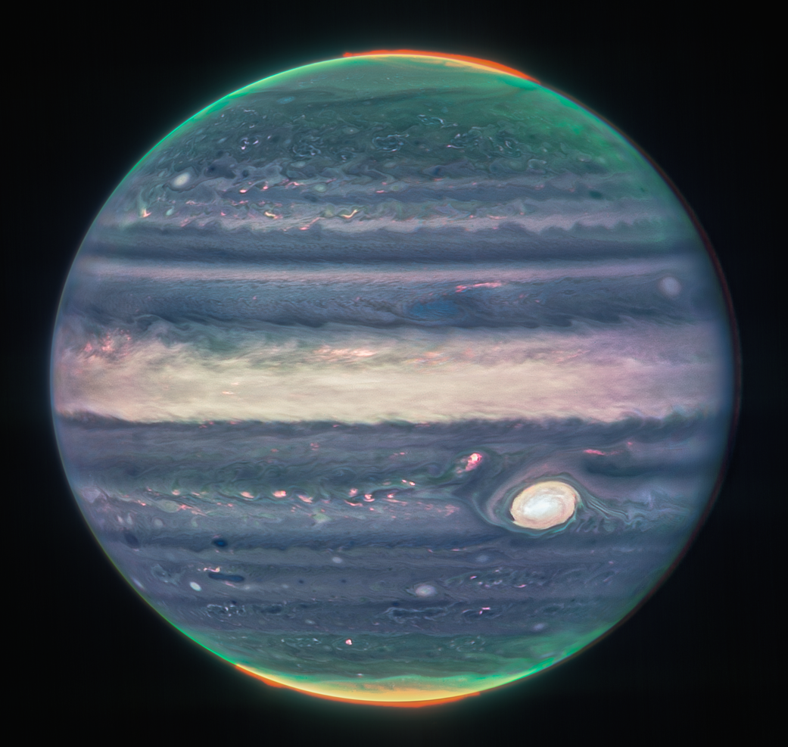
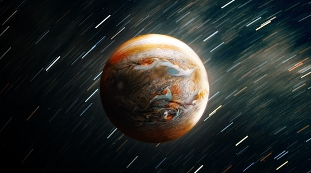
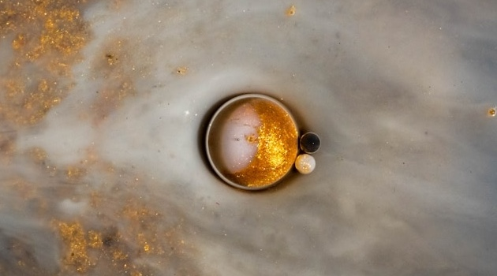
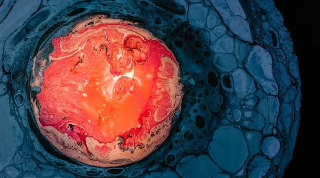

We now focus our attention on Jupiter, the largest planet in our solar system.
Its swirling clouds and massive storms, including the famous Great Red Spot, make it a fascinating subject of study.
Jupiter has a strong magnetic field and dozens of moons, including the four largest: Io, Europa, Ganymede, and Callisto. These are known as the Galilean moons. These moons are diverse in composition and activity, with Europa being a prime candidate in the search for extraterrestrial life due to its subsurface ocean.

Source: NASA/JPL-Caltech
Fun Facts
Gravity
Jupiter is so massive that its gravity influences the orbits of other objects in the solar system, acting as a kind of cosmic vacuum cleaner.

Brightness
Jupiter is the 4th brightest object in the night sky.

Mass
Jupiter has enough mass to make 318 Earths!

Core
New research shows the core of Jupiter is isn't solid as was previously believed!
Jupiter also has a faint ring system, discovered by the Voyager spacecraft. Though not as prominent as Saturn's rings, they add to the planet's complexity. The planet completes a rotation in just under 10 hours, making its day the shortest of all the planets.
Weather forecast for Jupiter's South Equatorial Belt: cloudy with a chance of ammonia.
Calculating Jupiter's Surface Gravity
Jupiter's surface gravity can be calculated using the formula: $$g = \frac{GM}{r^2}$$ Where $G$ is the gravitational constant, $M$ is the mass of Jupiter, and $r$ is its radius. Its escape velocity is given by: $$v_e = \sqrt{\frac{2GM}{r}}$$
This high escape velocity makes it difficult for spacecraft to leave its gravitational influence once captured.
Juno
The Juno mission is a NASA space probe launched on August 5, 2011, as part of the New Frontiers program to study Jupiter. Built by Lockheed Martin and operated by NASA's Jet Propulsion Laboratory, Juno entered a polar orbit around Jupiter on July 5, 2016. Its primary objectives include investigating Jupiter’s composition, gravity, magnetic field, and polar magnetosphere to gain insights into the planet’s formation and structure. Unlike previous outer solar system missions powered by nuclear energy, Juno uses solar panels—the largest ever deployed on a planetary probe at launch. Originally planned for 37 orbits over 20 months, the mission has been extended through September 2025, allowing for additional exploration of Jupiter's rings and inner moons.
Eyes on the Solar System: Jupiter
Explore Jupiter's current position, moons, and the path of the Juno spacecraft in real-time, using data and images from NASA missions. Use your mouse to zoom and rotate the view.
Future Plans
There is growing interest in exploring Jupiter's large icy moons, which may harbor subsurface oceans beneath their frozen crusts. Click the dots on the timeline below to see detailed information on each mission.
Read This
Read Chapter 11: The Giant Planets in the online textbook.
Check Your Understanding
For convenience distances around Jupiter are given in multiples of Jupiter's radius, which is 71,600 km. This unit is called RJ, so that, for example, a distance of 3.0 RJ corresponds to 3 x (71,600 km) or 214,800 km. If the formula for Juno's elliptical orbit is given by: $$38x^2 + 400y^2 = 15,200$$ Where $x$ and $y$ are in units of RJ. What is the equation for Juno's orbit written in Standard Form for an ellipse?
Thus, the semi-major axis is b = 6.2 RJ and is along the x-axis. The semi-minor axis is a = 20 RJ and is along the y-axis.
References
- NASA. (n.d.). Investigating the Elliptical Orbit of Juno around Jupiter. Space Math. https://spacemath.gsfc.nasa.gov/planets/JUNO5.pdf
- NASA. (n.d.). Jupiter. https://science.nasa.gov/jupiter/
- Wikipedia contributors. (2025, September 29). Juno (spacecraft). In Wikipedia, The Free Encyclopedia. Retrieved 18:00, October 30, 2025, from https://en.wikipedia.org/w/index.php?title=Juno_(spacecraft)&oldid=1314110222